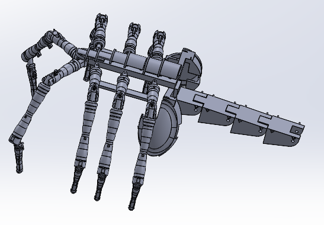

Spider Robot

Introduction
I was interested in how films created realistic animatronics rather than resorting to CGI, so I wanted to replicate something similar. The face-hugger from Aliens was a perfect option because it involved semi-complex movement and was partially used as an animatronic in the film.
Face-hugger
Design 
Achieving all the properties of the creature and creating a working and printable model became tough so I had to cut some parts. I used 3 leg segments instead of 4 to make the structure more stable. I also had to use 8 legs instead of 10 so they would have room to move. Finally, I had to segment the tail in wider segments, so I could more easily control the movement.
Legs
The legs were probably the hardest part to model because I had to follow an organic shape. I could have created a model in Blender and exported it into Solidworks, but I instead created a set of revolves and extrudes. This series of creating extrudes took several days as many of the variations seemed off as they did not fit the natural bone pattern.

Each leg is made up of three segments connected by an axle. A notch in the leg component controls the angle between the legs keeping that at a set range. The legs have powered movent lifting them using fishing line running through the legs controlled by a servo. A diagonal hole runs through each segment to hold the sliding fishing line. A compression spring and extension spring, connects the lower leg segment to the middle and the middle to the upper respectively, is used to return the leg to the default, relaxed position. Having the lower segment curl in and the upper segment move out creates a more natural gait and allows it to jump.
As you can see the pieces are not exactly in pristine condition because the 3d printer I used occasionally stopped working and I had to salvage what I could.
I did not use torsion springs even though they seem ideal because I wanted to keep the current, natural leg shape I did not want to extend any components to add the spring.
Leg Shifter
The 2 leg shifters connects to a set of legs. This creates forward momentem by lifting the legs and swinging them forward like a normal human gait. The front and back sets are connected and the center runs in the opposite direction. This will create a tripod-like movement when it is walking and the legs are lifted, improving balance. One servo moves the front set and another moves the back.

Tail
At first, I wanted to create create a tail that could curl inward and sway on all axes. However, I had to settle for only curling because I would need over 30 springs and 10 small tail components to even start to create a believable tail movement. So, in this design, it works very similarly to the legs with a fishing line controlled by a motor that curls the tail inward and compression springs to bounce it back. The rod holding the spring is slightly the left of the axis of rotation so the distance can change. The tail is also mostly hollow so the springs can hold the weight.
Sack
The sack is mostly for the visual element as it is a part of its recognition. I also hollowed out the center to use it as storage for the electronics. However, I later chose to keep all the electronics on the top to balance out the weight
Electronics

To make everything more stable and neater I soldered everything to a prototyping board rather than using a breadboard. I used 5 buck converters to step down the 12V from the battery to a safer level for the servos (5.25v) and Arduino (9v). I only connected 2 servos per buck converter to main a usable amperage to run each servo - around 3amps. The wires you can see running out of the board are signal wires starting from the pins that the servos connect to and lead to the Arduino.

Code
I could not find any any Arduino libraries that allowed multiple servos to run at once. Normally, when telling servos to run, a servo does not move until the one before is fully done moving.
To solve this problem I found the difference between the starting and ending position for all the servos. With the information I got the maximum difference and set all the servos to run until they all reach that difference.

I then found the percentage of the maxium difference each servo should move at. With that I ran each servo following the max difference and paused each servo at the correct interval based on the ratio of the servo's difference with the max difference.
Full Robot

The servo block attaches upside down and holds the spools for each leg. These spools hold the fishing line between the leg segements, so when the servo turns it pulls in the fishing line lifting up the leg.
It fully stands with the weight of the body and the servos. However, once the weight of the battery and Arduino is added some of the legs collapse due to the weight. This is mainly due to the extension spring between the upper and middle leg segment. The extension spring is bending rather than extending. I could fix this by printing new legs that work for a torsion spring so it could hold the weight, or I could purchace stronger and smaller extension springs and servos to accomodate the new strenght of the legs. I decided to stick with the current model for now to test if it works.
Mechanical Design AI Mechanical Engineering Electronics